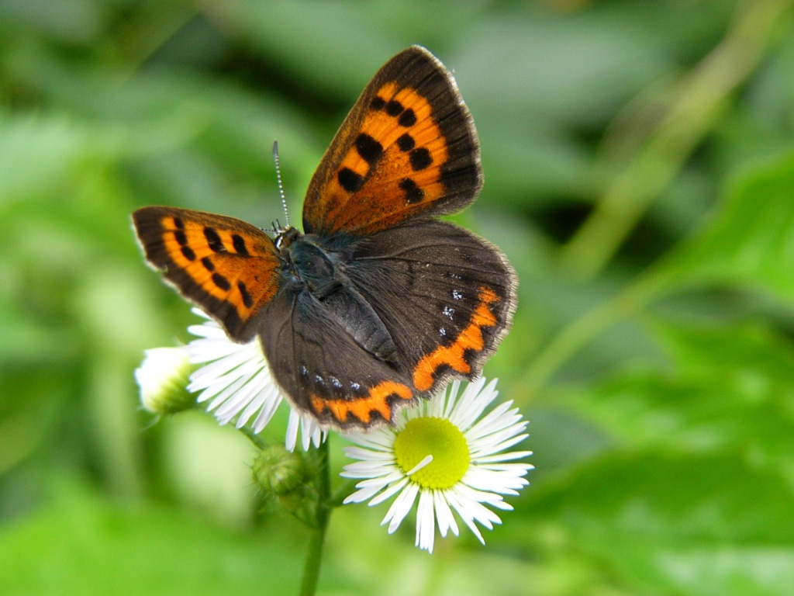
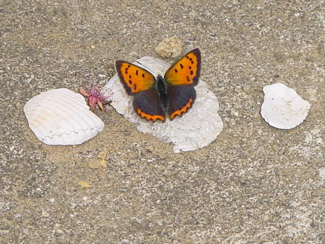

The four seasons
Small Copper
I saw a small copper unexpectedly several years ago in the yard.
It was a butterfly that had not been able to see any longer under my life environment.
However, it was still alive. I became very glad at that time.
After that, it comes to my yard early in the summer every year.
This year it came here on the day as if it's going to rain any minute now.

Although it is an appearance to close the wings,
the angle of closed wings is a little different from the picture above.
A red belt that lines on an edge of the outside wing is not an orange
but red just like a ruby.

a look which opened the wings


